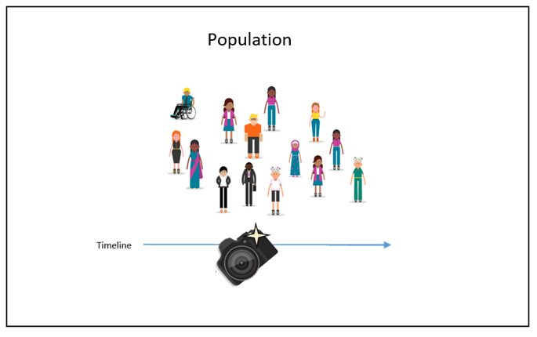

# This script
# load packages
library(pacman)
p_load(tidyverse,ggplot2,skimr,GGally,broom,ranger,rsample,caret)
# read in dataset
raw <- read_csv("https://csu-arec-330.github.io/materials/unit_02/inputs/arizona_grocery_foot_traffic.csv")Week 10 Lab: Intro to Analyzing Cross-Sectional Data

This Lab Contributes to Course Objectives: 1, 3, 4, 5, 7, 8
Learning Objectives R
Conduct exploratory data analysis
Conduct cluster analysis
Learning Objectives Tableau
Create a map that shows results from cluster analysis
Create a scatterplot that shows the fitted line from your regression analysis
Customize Tableau maps: Add Vizzes to tooltip
R
This lab will use the Arizona Grocery Store visitation data to introduce cluster analysis, regression, and classification trees/random forests using R. First, we will explore these data to become familiar with the data and remove outliers.
Exploratory Data Analysis
We will use a dataset of grocery store locations in the United States that contains information about the number of visitors, the distance (meters) from visitors’ home, and the median time (minutes) visitors spend in the store. The dataset is provided at https://csu-arec-330.github.io/materials/unit_02/inputs/arizona_grocery_foot_traffic.csv. First, set your directory and load the following packages: tidyverse,ggplot2,skimr,GGally,broom,ranger,rsample,caret
The package skimr provides some handy utilities for easily generating summary statistics. We will use skim() to get a quick overview of the data. What do you notice?
sumstats <- skimr::skim(raw)
sumstats #print the summary statsThe package GGally provides helpful EDA visualizations using ggplot2. Use ggpairs to visualize density plots and scatter plots to better understand correlation. What do you notice?
ggpairs(raw,columns = c("raw_visitor_counts","distance_from_home","median_dwell")) The data are heavily skewed and all of the variables have very few observations of very high values (called fat tails). This suggests that we may want to log the data. Let’s take a peak at what the pairs plot would look like if the data were logged. Note that we can use a utility called across() from dplyr to perform the same operation on multiple columns at once.
raw %>%
select(raw_visitor_counts,distance_from_home,median_dwell) %>% #subset only our variables of interest
mutate(across(everything(),log)) %>% #log transform each of the variables.
ggpairs() #plot the tranformed variablesThe log transform helped correct the skew but not the fat tails in distance_from_home and median_dwell. The very large values in distance_from_home may be visitors to the area with low visitation rate, and the very long dwell times may be employees. Let’s simply remove these very large values for this analysis.
raw %>%
filter(distance_from_home<48000,median_dwell<90) %>% #keep only stores with median distance from home <48km and median dwell less than 90 minutes
select(raw_visitor_counts,distance_from_home,median_dwell) %>% #subset only our variables of interest
mutate(across(everything(),log)) %>% #log transform each of the variables.
ggpairs() #plot the tranformed variablesThis looks better. Let’s keep only those stores labeled as grocery stores, and apply the filter criteria from above.
# select relevant columns and scrub outliers
data <- raw %>%
dplyr::filter(top_category=="Grocery Stores", #focus on those classified as grocery stores
distance_from_home<48000,median_dwell<90) %>% #apply outlier filter
select(placekey,raw_visitor_counts,distance_from_home,median_dwell) %>%
mutate(across(c(2:4),log)) %>% #log transform
drop_na() #drop any observations with missing valuesClustering Analysis
Our first step will be to standardize the data so the units of the variables do not affect the clustering. Use the function scale() to transform each variable by first subtracting the mean, then dividing by the standard deviation.
# scale data
data_scaled <- data %>%
select(raw_visitor_counts,distance_from_home,median_dwell) %>% #subsetting only the quantitative data
scale()Now, we can estimate the kmeans clustering algorithm with 3 clusters.
# perform k-means clustering with k=3
set.seed(123) # for reproducibility
kmeans_fit <- kmeans(data_scaled,
centers=3, #the number of clusters
nstart = 25) #the number of random startsAssign the clusters back to the data and merge (join) the data back with other store level attributes.
#create a dataframe with the store level attribute data not included in the clustering
location_info <- raw %>%
select(placekey,location_name,top_category,sub_category,latitude,longitude,city,region)
# add cluster labels to dataset and join to location info
data_clustered <- data %>%
mutate(cluster = kmeans_fit$cluster) %>%
inner_join(location_info,by="placekey")Now we can investigate attributes of the clusters by visualizing the data.
Regression
Suppose you are interested in a specific relationship between variables. Would we expect the relationship between raw_visitor_counts and distance_from_home to be positive or negative? We can test this hypothesis with a regression controlling for median_dwell time. By “controlling for”, we mean that we want to estimate the correlation between raw_visitor_counts and distance_from_home conditional on the correlation between raw_visitor_counts and median_dwell. We can estimate an ordinary least squares model in R using the function lm() that is built into R.
m1 <- lm(raw_visitor_counts ~ distance_from_home + median_dwell, #specifying the regression formula
data = data_clustered) The coefficient estimates and many other pieces of information are stored in the object m1. We can view a regression table using the function summary(m1).
We my want to visualize our regression lines in Tableau, so we can generate fitted values of raw_visitor_counts based on data we create to feed our function. We can easily produce a data frame with all combinations of distance_from_home and median_dwell using the function expand_grid(). Then we use the function augment() to generate fitted values for raw_visitor_counts based on our regression model.
new_data <- expand_grid(distance_from_home=seq(5,11,.1),
median_dwell=seq(1,7,.1))
fitted_data <- augment(m1,newdata = new_data) %>%
rename(raw_visitor_counts=.fitted)Save fitted_data for use in Tableau.
Classification
Our second supervised learning technique is classification using random forests. Our goal is to classify the stores as convenience stores or supermarkets based on our quantitative measures: raw_visitor_counts, distance_from_home, median_dwell. First, we can divide the dataset into training and testing samples. We will use the training set of data to train or estimate model parameters, then use the testing set to check the accuracy of the model classification
#Divide data into training and testing sample
set.seed(123)
data_split <- initial_split(data_clustered,prop=.7)
train_data <- training(data_split)
test_data <- testing(data_split)We use the function ranger() to fit the random forest of 500 trees using train_data. In this case, we specify the possible variables the model can use. The model will determine the best variable to split on at each branch.
#Fit the random forest model
rf_model <- ranger(factor(sub_category) ~ raw_visitor_counts + distance_from_home + median_dwell, #specify the model like a regression
data = train_data,
num.trees = 500)One useful way to measure the classification accuracy is via a confusion matrix. A confusion matrix shows the number of correct and incorrect classifications using the testing data. Remember, the model was not trained on the testing data, so this is our best guess at how the model will perform on new unlabeled data.
#Predict classification of test data
rf_predict <- predict(rf_model,data = test_data)
#
cm <- confusionMatrix(rf_predict$predictions, #calling our predictions from the previous command
factor(test_data$sub_category)) #comparing our modeled classification against the true data
#print the output
cmHow well does our model perform?
We can use the model to predict all of the data and merge it with the
all_predict <- predict(rf_model,data = data_clustered)
output_data <- data_clustered %>%
mutate(pred_sub_category = all_predict$predictions)
write_csv(output_data,"analyzed_data.csv")Tableau
1. Plotting Results from a Cluster Analysis
If you want to show results from your cluster analysis in Tableau, a simple way is to associate each cluster with a specific color. Let’s do this now.
Connect to your dataset with the results from your cluster analysis. I called this
analyzed_data.csv.Select
Latitude,Longitude, andClusterand select the Symbol Map fromShow Me.Recall you will need to change the
LatitudeandLongitudefields to Dimensions for this to display correctly.Let’s also change
Clusterto be associated with a color (rather than size) by dragging it to theColorcard.Finally, let’s change
Clusterto a Dimension and tell Tableau that it is Discrete.Let’s add some more detail to the tooltip. I would like to know the location name, top category, and cluster when I hover over each point on the map.
2. Plotting Results from a Regression Analysis
We have already discussed how to use Tableau’s integrated regression analysis, but a major limitation to this is that Tableau can only perform single variable regressions. Let’s look at the difference between the single and multivariate regression results by creating a scatterplot in Tableau:
To compare the single and multivariate regression results we will need to join our
analyzed_dataandfitted_regdata sources. Join these two datasets on theRaw Visitor Countsfield.Open a new sheet and create a scatterplot of
Raw Visitor CountsandDistance from Home(note that we want our Y variable –Raw Visitor Counts– on the Y-axis).Add a fitted line to your scatterplot.
To plot our multivariate regression results on this 2D plot, we will need to select a fixed value of the second variable (
Median Dwell Time). To demonstrate that we need to do this - try plotting the fitted values ofRaw Visitor CountsandDistance from Home. What do you see?Create a new calculated field, named
Fitted Distance From Homewith the following formula:IF [Median Dwell (Fitted Reg.Csv)]==3 THEN [Distance From Home (Fitted Reg.Csv)] ELSE NULL END
What is this formula doing?
Drag
Fitted Distance From Hometo the columns shelf, andRaw Visitor Counts (Fitted Reg.Csv)to the rows shelf. Change both fields to Dimensions.Change this new plot to a line (instead of scatter).
Create X and Y dual axes (by right clicking each axis), then synchronize the axes so that they have the same values. Finally you can hide the seconary axes to reduce the clutter.
How do the multivariate regression fitted values compare with the single variate ones?
Now, what happens if we look at the fitted values assuming
Median Dwell Timeis equal to 4? Edit the calculated field to make this change.
Note that another option for accomplishing this is to simply use the fitted regression equation (from R) to create a new calculated field. To see this, create a new calculated field called Fitted Visits 2 with the following formula: 8.14165 -0.27568*[Distance From Home] -0.36894*4.
Where did these numbers come from?
3. Adding Vizzes to Map Tooltips
The last thing I want to cover today is how to add other visualizations to your map tooltip. To do this, let’s create a simple scatterplot of Raw Visitor Counts and Distance from Home and add a fitted line.
Go back to your sheet with your map, color coded by cluster.
Open the Tooltip card and go to
Insert->Sheetsand select the sheet with your new scatterplot.When you hover over a point on the map, what is this visualization showing?
What if we instead want to show a scatterplot of these two variables only for grocery stores within that cluster? Go back to the Tooltip card and edit the Sheet info from
<Sheet name="Sheet 2" maxwidth="300" maxheight="300" filter="<All Fields>">to read<Sheet name="Sheet 2" maxwidth="300" maxheight="300" filter="<Cluster>">Now what happens when you hover over a point on the map? How did we accomplish this?
Let’s add a useful title to our scatterplot by typing
Relationship between Visits and Distance from home for stores in this clusterin the Tooltip above the scatterplot. Then let’s adjust the width of the scatterplot to500.